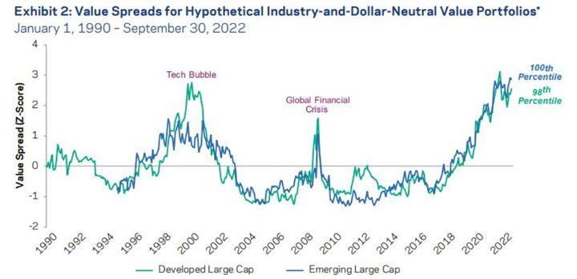
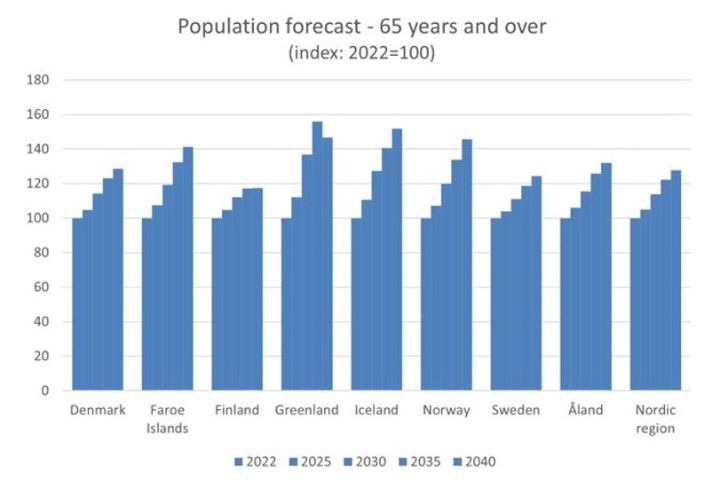
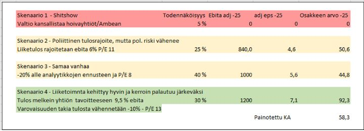
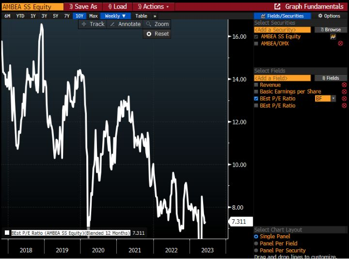
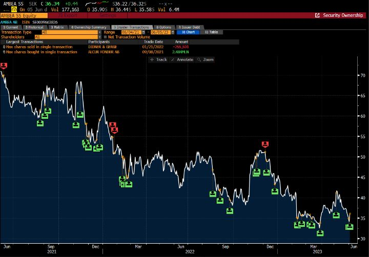

Joskus se nyt vaan on tyhmää maksaa liikaa (+case Ambea)
Twitterissä usein on hämmästyttävää, miten ihmiset esittävät, että on yksi oikea tapa sijoittaa. Ehkä yleisimmät koulukunnat tuntuvat olevan kasvu-, laatu ja halpasijoittajat - vältetään nyt arvosijoittamis-termiä, kun siitä on tullut tahallisen väärinymmärryksen lempilapsi. Koska markkinoiden voittaminen on vaikeaa, voi olla järkevää erikoistua. Siinä on toki se huono puoli, että voi tulla viiden vuoden periodi, kun se oma suosikkiryhmä aliperformoi. Tällöin jopa hyvillä osakevalinnoilla vastavirta voi olla turhan voimakas.
Markkinoilla on lukemattomia tapoja tehdä ylituottoa. Tuskin onkaan niin toivotonta strategiaa, ettei joku olisi senkin onnistunut hiomaan tuottavaksi tekemällä asiat vain muita paremmin.
Kasvu- ja laatusijoittamisessa osakkeesta liikaa maksamisen voi saada anteeksi, jos on todella hyvä arvioimaan yrityksiä, jotka voivat kasvaa vuosikymmenestä toiseen. Hyvä kuitenkin huomata, että nämä yhtiöt ovat helppo löytää vain jälkikäteen. Toki moni on pystynyt siihen myös reaaliajassa.
Vaikka on tultu äärimmäisyksistä vähän normaalimpaan, koen että halpalaari on kolmesta perusstrategiasta tällä hetkellä houkuttelevin. Arvostuserot ovat tavanomaista leveämpiä. Se voi olla täysin perusteltua, mutta totuuden siitä tiedämme vasta myöhemmin. AQR:n graafi on jo 9 kk takaa, mutta kalliit yhtiöt ovat lähinnä kallistuneet sen jälkeen.

Nousseiden korkojen myötä ja taantumavaaran takia, välttäisin vielä hetkellisesti kuitenkin seuraavia ominaisuuksia matalakertoimisissakin osakkeissa, ellei hinta ole todella naurettavan halpa:
- Erityisen suuri velkataakka.
- Riippuvuus rakennussektorista
- Riippuvuus Kiinan jatkuvasta kasvusta (4%+ kasvua nähdään jatkossa vain
virallisissa tilastoissa)
- Yhtiö syklinen ja tulos edelleen tavanomaista paljon korkeammalla.
Covid ja sitä seurannut rahatsunami loivat hyvin poikkeukselliset olosuhteet. Kaikki nousuvesi ei ole ehkä vieläkään laskeutunut.
Onko halpa yhtiö hyvä sijoitus?
Arvostuskertoimiltaan halvat yhtiöt ovat halpoja yleensä hyvästä syystä. Vaikka halvat yhtiöt ovat voittaneet markkinan (toisin kuin kasvuyhtiöt) pitkällä aikavälillä, on viimeiset 10 vuotta ollut täysin päinvastaista kehitystä.
Tyypillinen aloittelijan virhe on ostaa yhtiötä syklin huipuilla halvan näköisenä. Sitten tulos romahtaa ja kurssi tulee perässä. Usein syklisiä kannattaa ostaa silloin kuin ne näyttävät tuloskertoimilla kalliilta ja markkina surkealta.
Jotta sijoitus olisi hyvä, olisi hyvä miettiä miksi joku myy tätä yhtiötä halpuudesta huolimatta. Usein hyvät sijoitukset lähtevät oivalluksesta, että muut ymmärtävät jotain väärin tai että ymmärtää logiikan, miksi yhtiötä myydään (mutta mikä ei ole kovin raskauttava tekijä).
Stockmann näyttää halvalta. P/E tämän vuoden tuloksella on analyytikoiden arvioilla 9. En näe ylituottoa sijoittaa yhtiöön, jos argumentti on P/E 9. Kuka vaan saa tuon tiedon muutamassa sekunnissa. Se on samaa luokkaa kuin vaikka Lontoon verrokki Marks & Spencer. Sen sijaan, jos pystyy arvioimaan, koska yhtiö voisi eriyttää Lindexin, aletaan puhua arvon purkautumisesta. Oli kyse sitten pääomistajien aivoituksista tai juridisista esteistä divestoinnille, siinä voi olla lisäarvoa. Tai jos pystyy hyvin uskottavasti perustelemaan, miksi Stockmann parantaisi juoksuaan nykyisestä. Tai, että miksi sektori kokonaisuudessaan arvostetaan väärin. Itse en tällä hetkellä pysty, niin olen katsomossa.
Usein halpayhtiöissä sijoituspaikka aukeaa, koska yhtiö on tylsä, oksettava tai puistattava. Parhaat sijoitukset ovat usein kaikkia näitä. Tämä ei ole oma ideani, vaan Peter Lynchin. Lynch oli siitä harvinainen sijoittaja, että hän pystyi luovimaan onnistuneesti sekä laatu-, kasvu että halpasijoituksissa. Sen takia hän on yksi sijoituslegendoista.
Tästä päästäänkin kohtalaisen etovaan osakkeeseen nimeltä Ambea.
Ambea
Kuvittele, että voisit sijoittaa taitavasti johdettuun SaaS yhtiöön tai 10 % vuosikymmenestä toiseen kasvavaan pientä nicheä isolla alalla hoitavaan monopoliin. Sitten päätät kuitenkin sijoittaa vanhuksia, ongelmanuoria ja mielenterveyspotilaita hoitavaan yhtiöön, jonka paketissa tulevat:
- Jatkuva riski virheistä, joista nousee hirveä metakka mediassa. Vanhus unohtuu huoneeseensa kuolemaan tai hoitaja pahoinpitelee vammaisen lapsen.
- Poliittinen riski tuottokatoista.
- Koko homman kansallistaminen joko poliittisen muutoksen takia tai yhtiön tekemien kämmien takia.
- Ongelma löytää hoitajia, joiden palkat vielä nousevat ennen indeksikorjauksia myyntihintoihin.
- Valtavat vuokravastuut taseessa, koska kiinteistöjä ei omisteta itse.
Lyhyesti siis osake, jota vain masokisti voisi rakastaa.
Ambean osake on painunut tänä vuonna entistäkin syvemmälle, koska toisella hoivayhtiöllä Humanalla on ollut laatuongelmia, minkä takia henkilökohtaisen avun liiketoiminnat ovat vaarassa joutua jäähylle.
Mutta aina löytyy hinta, jolla himmeinkin timantti on ostamisen arvoinen.
Ambea siis tekee hoivatyötä. Se tekee kuluvana vuonna 13 miljardin sek:n liikevaihdolla 800 msek liikevoittoa (josta puolet nettoa yritysostopoistot vähennettynä). Markkina-arvoa yhtiölle lasketaan 3200msek.
Liiketoimintasegmentit kokojärjestyksessä:
- Vardaga (33%) on hoivakotibisnes vanhuksille Ruotsissa.
- Nytida (31%) hoitaa Ruotsissa ihmisiä, joilla on joku vammaisuus tai psykososiaalinen ongelma.
- Stendi (24%) järjestää laidasta laitaan hoivapalveluita Norjassa.
- Alltiden (9%) on vammaisten ja vanhusten hoitokoteja Tanskassa.
- Klara (3)% on sosiaalialan työtenkijäpalveluita Ruotisssa.
Tuntuu, että sijoittajat ovat hyvin keskittyneitä nyt huonoihin puoliin. Kun Attendo ja Ambea tulivat pörssiin 6-8 vuotta sitten, ajateltiin eri lailla. Vanhoja analyysiraportteja lukemalla suhtautuminen oli erilaista. Hyviä puolia löytyi esimerkiksi:
- Käytännössä varma kasvu demografioiden takia. Harva asia on niin varmaa kuin hoidettavien ihmisten lisääntyminen yhteiskunnissamme.
- Valtaosa tuloksesta kääntyy vapaaksi kassavirraksi. Uuden hoitokodin perustaminen ei syö kovin paljon pääomaa, koska joku muu omistaa kiinteistön.
- Vanhuksia ja muita hoidettavia hoidetaan taantumista huolimatta. Vaikea nähdä poliittista päätöstä, jossa ihmiset jätetään heitteillä rahapuutteen takia.
Näistä syistä sijoittajat haarukoivat yhtiöille 14-16x tuloskertoimia. Kertoimia, millä voisi olettaa yli 5% tuottoa, mutta vaikea kuvitella kenenkään sukkien pyörivän.
Ambea ja muut hoivayhtiöt kiinnostavat nyt, koska kertoimet ovat puolittuneet.
Hoiva-ala on ei ole mahtava bisnes. Ambea ei ole laatuyhtiö, vaikkakin uskon että se on alan parhaiten hoidettu.
Jos mietitään Peter Lynchin listaa täydellisen osakkeen ominaisuuksista, yhtiö täyttää monta. Ambea on tylsä, tekee jotain tylsää, joka ei herätä intohimoja ja alassa on jotain kiistanalaista, miksi moni ei halua koskea osakkeeseen.
Lopulta pääomarahastot ostavat (ovat nyt ja historiallisesti omistaneet näitä) hoivayhtiöt pois pörssistä, jos hinta makaa liian alhaalla. Hyvä kassakonversio, perinteisesti aktiivinen toimiala pääomarahastoille ja alhainen hinta. Kuorruta velalla ja lisää kirsikka päälle – a vot! Triton omistaa yhtiöstä 26,5% vaikka listautumisannin jälkeen onkin puolittanut omistuksensa. Kuitenkin hyvä huomata, että Tritonin edustaja hallituksessa on ostanut osaketta 18,5k -> 186k omalla rahallaan viimeisen vajaan parin vuoden aikana. En olisi kovin yllättynyt, jos Triton päätyy myymään koko Ambean jollekin toiselle pääomasijoittajalle.
Hoiva-ala kasvaa vuosi vuodelta ja ei ole syklinen. Demografiat takaavat, että vanhusten määrä kasvaa. Suomessa oli viime vuonna 606 tuhatta yli 75-vuotiasta (Tilastokeskus). 700 tuhatta menee rikki kolmen vuoden päästä. Vuonna 2040 ennustetaan olevan 905 tuhatta yli 75-vuotiasta. Ambean markkinoilla vanhusten kasvu on samansuuntainen (lähde Nordic Statistics database):

Poliittinen riski ja skenaariot
Poliittinen riskiä rajoittaa eniten osakkeiden hinta. Toisin kuin monissa muissa yhtiöissä, näiden yhtiöiden valuaatio on puolittunut viimeisen viiden vuoden aikana. Vaikka valtio jostain syystä jossain vaiheessa rajoittaisi kannattavuutta, olisi se aika hyvin hinnassa sisällä. Mutta kun on hyvin oleellisesti eriäviä lopputuloksia, on hyvä tehdä skenaarioanalyysi:

Analyysi on hyvin suuripiirteinen, ja yritin heittää negatiivisuuslasit päähän. Yritin venyttää negatiivisten skenaarioiden todennäköisyyttä niin pitkälle kuin järki salli, mutta silti osakkeen nykyinen hinta 36 SEK jää pahasti jälkeen 58 SEK keskiarvosta 2025.
Arvostus
Ruotsissa saatiin suhteellisen yritysmyönteinen hallitus. Silti osakkeen arvostus on laskenut kuin lehmän häntä. P/E:t seuraavan 12kk tulosennusteella (Analyytikot ovat jo laskeneet ennusteita q2-q3 selvästi edellistä vuotta alemmaksi, koska palkkojen nousu ylittää liikevaihdon nousun):

Yhtiö omistaa vielä 5 % osakekannastaan, joten se huomioiden seuraavan 12kk P/E painuu alle seitsemän.
P/E on toki puutteellinen tapa hinnoitella yhtiöitä. Hoivayhtiöillä on runsaasti velkaa, joten yritysarvoon perustuvat luvut ovat kalliimman puoleisia. Mutta valtaosa velasta on vuokravastuita. Viimeisen kolmen vuoden aikana yhtiöiden vapaa kassavirta on ylittänyt tuloksen. Vuokravastuista puhdistettu velkaisuus on noin 3x EBIT (ebitdaan vertaaminen ei järkevää, koska siinä ei ole vuokrakuluja), eli ihan kohtuullinen. Mutta varmaan monessa yritysarvo-screenauksessa näyttää vuokravastuiden takia kalliimmalta kuin onkaan. Toki sijoittaessa pitää tehdä oletus, ettei johto ole tehnyt tyhmiä sopimuksia syrjäkyliin.
Ja hyvä huomata, että tulosluvuista on putsattu yrityskauppojen poistot.
Kun ostaa halpoja yhtiöitä, on hyvä varautua pettymyksiin. Koska sijoittajat inhoavat pettymyksiä tuottavia yhtiöitä, halvoista yhtiöistä on tilastollisesti saanut hieman markkinatuottoa parempaa tuottoa. Mutta ilman kunnon hajautusta, halvat yhtiöt ovat usein melkoinen kivireki vedettäväksi.
Yhtiön akuutti ongelma on, että työtekijöiden palkat nousevat Q2 ja Q3 enemmän kuin yhtiö pystyy nostamaan hintoja. Johto on sanonut pystyvänsä kompensoimaan suurimman osan palkkojen nousuista hinnannostoilla. Mutta myös tämä epävarmuus luultavasti pitää osakkeen hintaa alhaalla tällä hetkellä.
Inflaatio on kuitenkin laskussa ja se alkaa tukea tulosta ruoan hinnan ja lämmityskustannusten kautta. Silti Ambean tulos kärsii loppuvuodesta. Tämä on kuitenkin ollut tiedossa jo pitkään ja osake on ehkä juuri siksi pohjalla.
Voitonjako, omien ostot ja sisäpiiriostot
Halvan yhtiön omistaminen on epäkiitollista, jos se pysyy halpana, eikä jaa tuottoja ulos. Olen kuunnellut Ambean sijoittajapuheluita, ja niistä välittyy kuva, että johto ymmärtää pääoman allokointia ja yrityksen aliarvostuksen.
Ambea osti 5% osakekannasta omia osakkeita viime marraskuulta kevääseen. Toimitusjohtaja ja sisäpiiri ovat olleet ostolaidalla (vihreät sisärpiiriostoja, punaiset sisäpiirimyyntejä):

Suurin ostaja viimeisen parin vuoden aikana on ollut Tritonin tyyppi (150k), toiseksi suurin toimari (75k). Ei mitään valtavia määriä, mutta kuitenkin ihan oleellisia.
Oma peruscase on, että jos osake säilyy näin halpana, yhtiön kannattaisi vähintään 5 % osakekannastaan joka vuosi. Nykyisen 3,5 % osinkotuoton lisänä, tämä toisi osakkeenomistajan yieldin 8,5%:n. Lisäksi kassavirtaa riittäisi velkojen maksuun tai pieniin yrityskauppoihin. En haluaisi nähdä isompia yrityskauppoja, jos vaihtoehtona on pilkkahintainen oma osake. Kerrointen nousu tulisi sitten plussana.
Yhtiöön osui Covid- ja inflaatio paskamyrskyt, mutta niistä huolimatta tulos on pitänyt niin, että osakkeen viimeisen 12kk P/E on 8.
Halpayhtiöissä arvonnousu tulee tilastollisesti kertoimista ei tuloskasvusta. Jos onnistuu saamaan myös tuloskasvua, voi tuotto olla varsin hyvä.
Poliittisesta riskistä huolimatta Ambea on hiipinyt salkun toiseksi suurimmaksi omistukseksi. Osake on hyvin edullinen, sisäpiiri ostaa ja uskon omien osakkeiden oston jatkuvan. Vapaan kassavirran tuotto on yli 10 %. Jos pelkää talouden pehmenevät, halpa suhdannekestävä (ja laskevista hinnoista hyötyvä) yhtiö, jossa on yritysosto-optio, tuntuu hyvältä paikalta parkkeerata rahojaan.